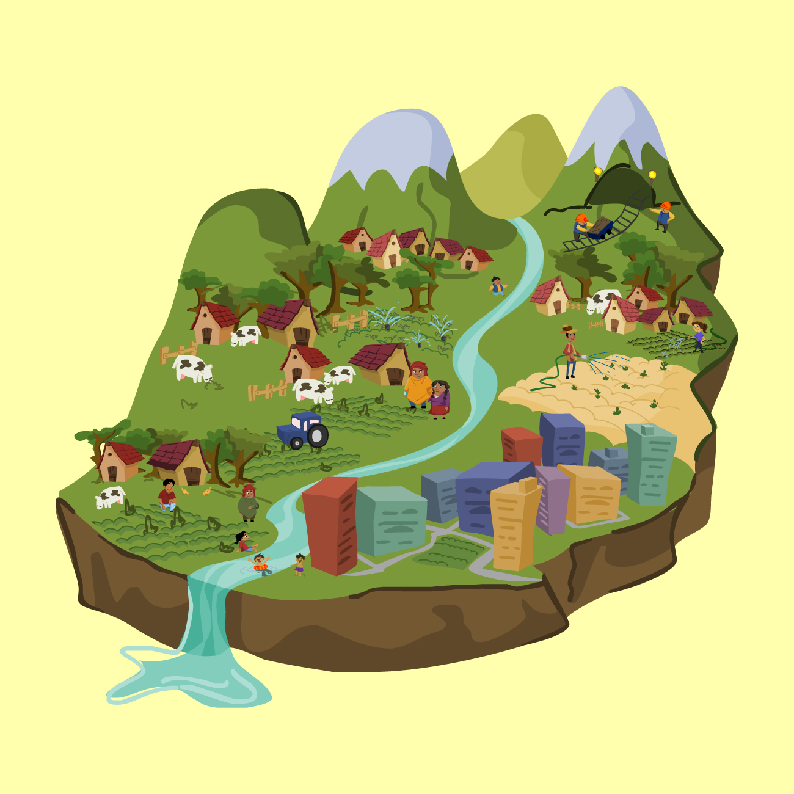

Selamat datang di website presentasi kelompok 2! Kami sangat antusias untuk berbagi pengetahuan tentang makhluk hidup dan lingkungannya. Mari kita pelajari bersama!
Pengantar
Lingkungan hidup adalah segala sesuatu yang ada di sekitar kita, baik yang hidup maupun tidak hidup. Makhluk hidup berperan penting dalam menjaga keseimbangan lingkungan, dan interaksinya dengan lingkungan sangat kompleks serta menarik untuk dipelajari. Materi ini akan membantu kita memahami bagaimana kehidupan berlangsung secara harmonis dengan lingkungan.
1. Komponen Lingkungan Hidup
Lingkungan hidup terdiri dari dua jenis komponen utama, yaitu:
Komponen Biotik: Meliputi semua makhluk hidup seperti manusia, hewan, tumbuhan, jamur, dan mikroorganisme. Mereka berinteraksi satu sama lain untuk memenuhi kebutuhan hidupnya.
Komponen Abiotik: Meliputi faktor non-hidup seperti cahaya matahari, air, udara, tanah, dan suhu. Komponen ini sangat mempengaruhi kehidupan makhluk hidup di sekitarnya.

2. Ciri-ciri Makhluk Hidup
Makhluk hidup memiliki ciri-ciri yang membedakannya dari benda mati. Beberapa ciri utamanya adalah:
Bernapas: Mengambil oksigen dan mengeluarkan karbon dioksida untuk menghasilkan energi.
Bergerak: Memiliki kemampuan untuk berpindah tempat atau mengubah posisi tubuh.
Tumbuh dan Berkembang: Bertambah ukuran dan mengalami perubahan bentuk seiring waktu.
Memerlukan Nutrisi: Membutuhkan makanan untuk memperoleh energi dan tumbuh.
Menghasilkan Keturunan: Berkembang biak untuk melanjutkan jenisnya.
Merespons Rangsangan: Dapat merespons perubahan lingkungan seperti cahaya dan suhu.
Beradaptasi: Mampu menyesuaikan diri dengan lingkungan untuk bertahan hidup.
3. Interaksi Biotik dan Abiotik
Interaksi antara makhluk hidup dan lingkungan non-hidup menciptakan keseimbangan ekosistem. Contohnya:
Fotosintesis: Tumbuhan memanfaatkan cahaya matahari, air, dan karbon dioksida untuk membuat makanan.
Siklus Air: Air diserap oleh akar tumbuhan, digunakan oleh hewan, dan kembali ke atmosfer melalui penguapan.
Ketergantungan Hewan: Hewan memerlukan tumbuhan sebagai sumber makanan dan oksigen.
4. Interaksi Antar Komponen Biotik
Interaksi antara sesama makhluk hidup sangat beragam, seperti:
Predasi: Hubungan makan-memakan, seperti singa memangsa rusa.
Kompetisi: Persaingan antar makhluk hidup untuk mendapatkan sumber daya yang terbatas.
Simbiosis: Hubungan khusus antara dua makhluk hidup, misalnya:
Mutualisme: Saling menguntungkan (contoh: lebah dan bunga).
Komensalisme: Satu pihak untung, yang lain tidak dirugikan (contoh: ikan remora dan hiu).
Parasitisme: Satu pihak untung, yang lain dirugikan (contoh: cacing pita dalam tubuh manusia).
5. Jenis-jenis Pencemaran Lingkungan
Pencemaran adalah masuknya zat berbahaya ke lingkungan yang dapat merusak keseimbangan alam. Jenis-jenisnya antara lain:
Pencemaran Udara: Disebabkan oleh asap kendaraan, industri, dan pembakaran sampah. Mengandung CO, CO2, SO2, dan NOx.
Pencemaran Air: Limbah industri, pertanian, dan rumah tangga mencemari sungai, danau, dan laut.
Pencemaran Tanah: Akibat pembuangan sampah sembarangan dan penggunaan bahan kimia berbahaya.
Pencemaran Suara: Kebisingan dari kendaraan, mesin, dan kegiatan industri.
Penutup
Demikian presentasi dari kelompok 2. Semoga informasi yang disampaikan bermanfaat dan menambah pengetahuan kita semua tentang makhluk hidup dan lingkungannya. Mari kita jaga alam agar tetap lestari 🌿